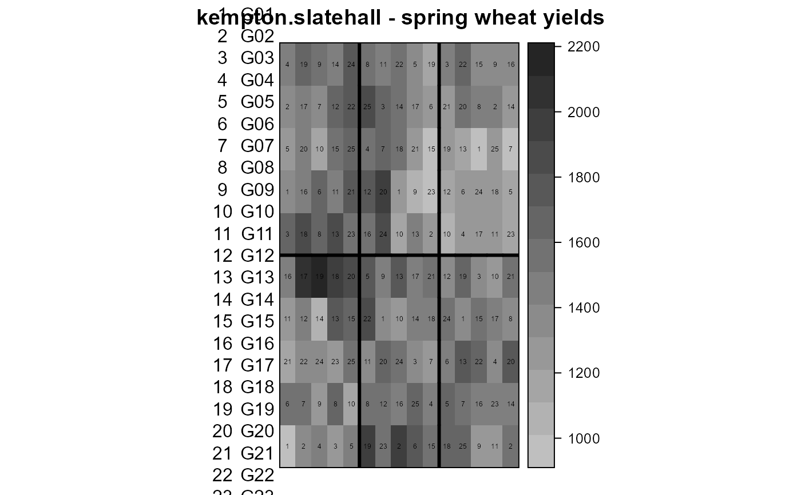

kempton.slatehall.RdYields for a Slate Hall Farm 1976 spring wheat trial.
A data frame with 150 observations on the following 5 variables.
reprep, 6 levels
rowrow
colcolumn
gengenotype, 25 levels
yieldyield (grams/plot)
The trial was a balanced lattice with 25 varieties in 6 replicates, 10 ranges of 15 columns. The plot size was 1.5 meters by 4 meters. Each row within a rep is an (incomplete) block.
Field width: 15 columns * 1.5m = 22.5m
Field length: 10 ranges * 4m = 40m
R A Kempton and P N Fox. (1997). Statistical Methods for Plant Variety Evaluation, Chapman and Hall. Page 84.
Julian Besag and David Higdon. 1993. Bayesian Inference for Agricultural Field Experiments. Bull. Int. Statist. Table 4.1.
Gilmour, Arthur R and Robin Thompson and Brian R Cullis. (1994). Average Information REML: An Efficient Algorithm for Variance Parameter Estimation in Linear Mixed Models, Biometrics, 51, 1440-1450.
# \dontrun{ library(agridat) data(kempton.slatehall) dat <- kempton.slatehall # Besag 1993 figure 4.1 (left panel) libs(desplot) grays <- colorRampPalette(c("#d9d9d9","#252525")) desplot(dat, yield ~ col * row, aspect=40/22.5, # true aspect num=gen, out1=rep, col.regions=grays, # unknown aspect main="kempton.slatehall - spring wheat yields")# ---------- # Incomplete block model of Gilmour et al 1995 libs(lme4, lucid) dat <- transform(dat, xf=factor(col), yf=factor(row)) m1 <- lmer(yield ~ gen + (1|rep) + (1|rep:yf) + (1|rep:xf), data=dat) vc(m1)#> grp var1 var2 vcov sdcor #> rep:xf (Intercept) <NA> 14810 121.7 #> rep:yf (Intercept) <NA> 15600 124.9 #> rep (Intercept) <NA> 4263 65.29 #> Residual <NA> <NA> 8062 89.79## groups name variance stddev ## rep:xf (Intercept) 14810 121.7 ## rep:yf (Intercept) 15600 124.9 ## rep (Intercept) 4262 65.29 ## Residual 8062 89.79 # ---------- # asreml3 & asreml4 libs(asreml,lucid) # Incomplete block model of Gilmour et al 1995 dat <- transform(dat, xf=factor(col), yf=factor(row)) m2 <- asreml(yield ~ gen, random = ~ rep/(xf+yf), data=dat)#> Model fitted using the gamma parameterization. #> ASReml 4.1.0 Fri Dec 11 17:48:28 2020 #> LogLik Sigma2 DF wall cpu #> 1 -734.184 26778.41 125 17:48:28 0.0 #> 2 -720.066 16594.96 125 17:48:28 0.0 #> 3 -711.122 11175.53 125 17:48:28 0.0 #> 4 -708.253 8997.74 125 17:48:28 0.0 #> 5 -707.791 8149.58 125 17:48:28 0.0 #> 6 -707.786 8062.41 125 17:48:28 0.0vc(m2)#> effect component std.error z.ratio bound %ch #> rep 4263 6877 0.62 P 0.4 #> rep:yf 15600 5090 3.1 P 0 #> rep:xf 14810 4866 3 P 0 #> units!R 8062 1341 6 P 0## effect component std.error z.ratio constr ## rep!rep.var 4262 6890 0.62 pos ## rep:xf!rep.var 14810 4865 3 pos ## rep:yf!rep.var 15600 5091 3.1 pos ## R!variance 8062 1340 6 pos # Table 4 # asreml3 # predict(m2, data=dat, classify="gen")$predictions$pvals # asreml4 # predict(m2, data=dat, classify="gen")$pvals # }